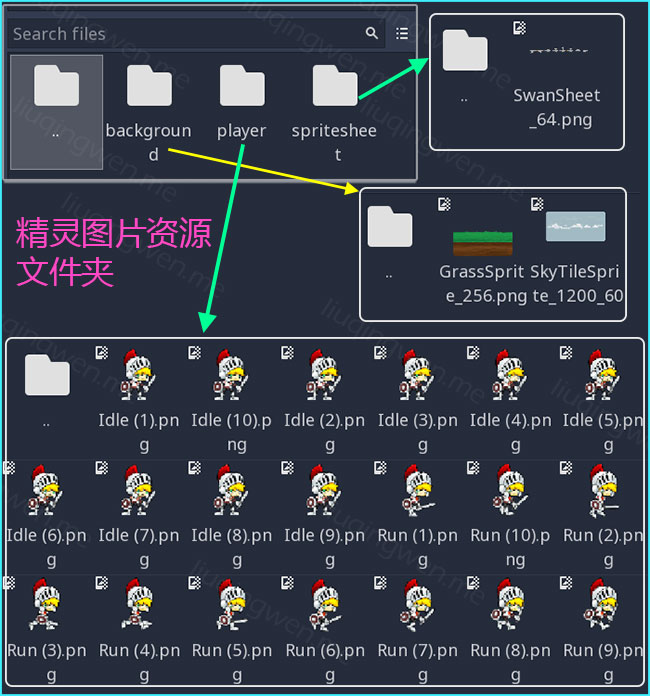
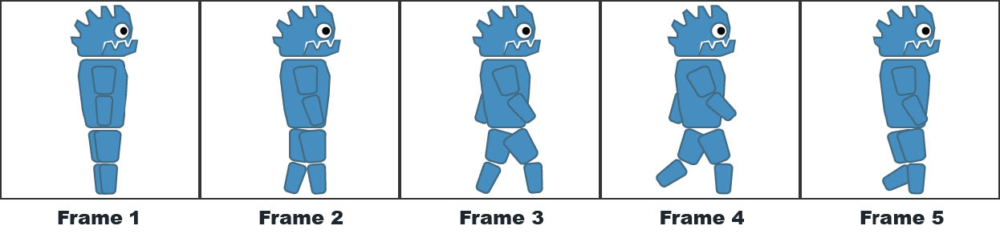
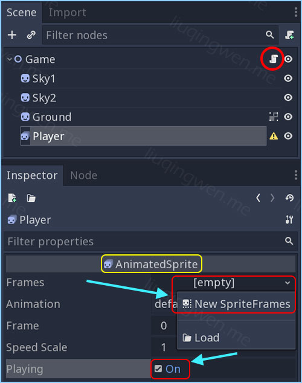
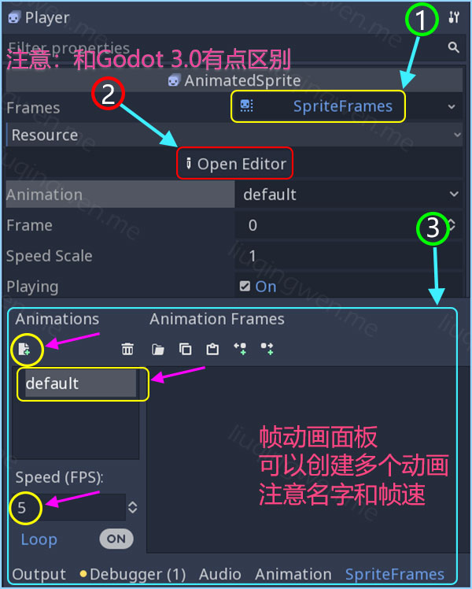
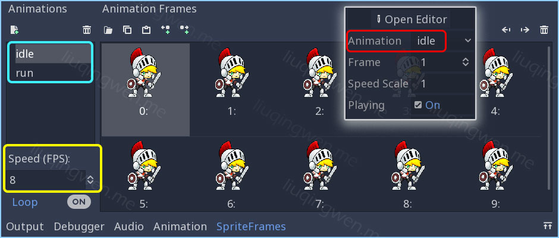
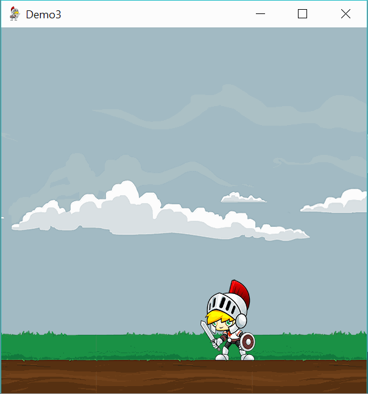
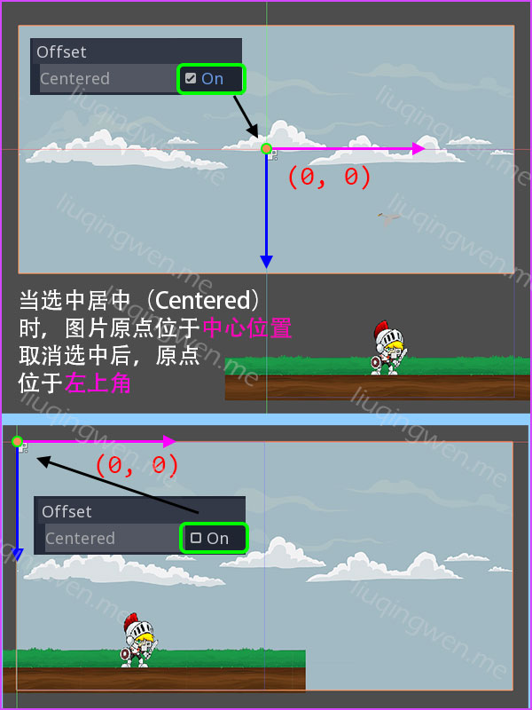
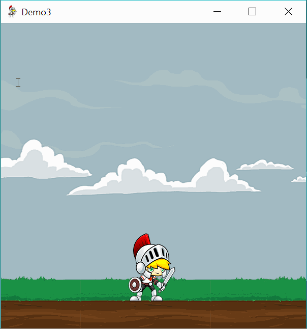

Godot3游戏引擎入门之四：给主角添加动画（上）

一、前言
说明：我目前使用的 Godot 3.1 预览版，所以会与 Godot 3 的版本有一些区别，界面影响不大，如果要使用我上传的 Github Demo 代码，记得去官网下载 3.1 预览版（或者等之后正版发布）然后就可以正常打开运行 Demo 了。
本篇文章我会详细讲述 Godot 3 中制作动画的三种方式，篇幅有点长，所以分成上下两部分，请留意。 :smile:
主要内容： Godot 2D 小游戏入门之三种动画创建方式（前两种）
阅读时间： 10-15 分钟
永久链接：http://liuqingwen.me/blog/2018/09/25/introduction-of-godot-3-part-4-add-some-cute-animations-part-1/
系列主页： http://liuqingwen.me/blog/introduction-of-godot-series/
二、正文
本篇目标
- 使用动画精灵 AnimatedSprite 节点创建 Sprite 骑士动画（上篇）
- 使用 Sprite 节点和 GDScript 脚本代码共同创建背景滚动效果（上篇）
- 使用 AnimationPlayer 节点制作天鹅飞舞的关键帧动画（下篇）
游戏场景
还是上篇一样的场景：绿油油的草地上站着一位能左右打滑的扛着大刀的小正太！嗯，不合格的武士只能打滑，不能跑，还不能正常呼吸，怎么看都不舒服，所以，我们这篇文章的任务就是：让他真正地动起来——给我们的游戏场景添加一些生动的动画元素。 :sunglasses:
由于涉及到动画，这会导致在 2D 游戏中图片资源数量急剧增加，不过别担心，我已经分门别类地放置好了，在 Godot 项目中可以使用文件夹管理资源，如下：

项目 Demo 已经上传到 Github ，您可以到我的 Github 主页上下载整个游戏的相关资源和代码，如果需要直接运行，请注意使用 Godot 3.1 预览版打开。
接下来，我们在原来场景的基础上：让我们的主角真正地跑起来，再增加一个卡通云朵飘过的天空，以及一只在天空中飞舞的勤奋的小天鹅。
创建动画
我们要添加的三个动画元素，分别使用三种方法制作，当然，你完全可以只选择其中一种或两种动画方式来完成，这取决于你，这里我只是把这几种常用方式都介绍一下，希望达到一个抛砖引玉的效果，哈哈。
第一种方法：使用 AnimatedSprite 制作骑士动画
这种方法使用非常简单但又不失强大，最适合于打造单个人物、物体的精灵动画特效。 AnimatedSprite 制作动画的原理很简单：如同电影胶卷一样，一张一张图片播放，当播放速度达到一定程度，就感觉是在播放动画了！

如果你有使用过 Apple iOS 的 SpriteKit 框架的经验，那么你会发现这种动画制作方式在游戏开发中使用是非常频繁的。 Godot 中使用的是 AnimatedSprite 节点，制作动画非常简单，你需要准备的是很多张主角的一系列动作图片即可。本次 Demo 中我们将应用到骑士两种动作状态： idle 休息状态和 run 奔跑状态。
理论说多了，不如实践！我们开始动工。首先，和上一篇不一样，我们不使用 Sprite 创建主角，取而代之的是 AnimatedSprite 动画精灵节点，添加节点后改名为 Player ，操作结果如下图，忽略节点后的警告小三角形：

接下来按上图，先选中 Player 骑士玩家（ AnimatedSprite 节点），在属性面板 Frames 下点击新建一个 SpriteFrames 即所谓的精灵帧组*，创建完后点击 *Open Editor 打开精灵帧动画编辑工具面板（注意：此处和 Godot 3.0 版本略有区别，之前的版本中无此按钮，也不需要点击此按钮！），主界面下方就出现了我们创建主角各种动画状态的工作区域了。这里我们创建两个动画，分别命名为 idle 和 run ，然后对应地把各自状态的 10 张图片（命名 (1) 到 (10) ）拖到空白内容栏即可，步骤如下：

完成后，我们需要调整每个状态动画的帧率（ FPS ），也就是每秒显示几帧或者几张图片。我这里设置 idle 状态是 8 FPS ，跑步 run 动画状态是 16 帧每秒，你可以按需设置，接着选中骑士玩家节点，在属性面板，如上面第二张图中突出部分，勾选 Playing 选项框，然后在 Animation 属性中选择你想查看的动画状态（ idle/run ）就可以在编辑器中实时查看人物动画效果了，是不是很贴心啊？

不知道你的感觉是怎样，反正我感觉 Godot 的动画精灵非常简单又灵活，其实在 Unity 中也有帧动画，即 Animation ，但是在 Unity 中创建动画相对 Godot 要繁琐点，需要创建帧，然后一帧一帧地设置图片，最后需要创建 Animator Controller ，在 Godot 中可以直接拖拽一步到位，设置也非常简单。
第一种方式基本完成，接下来就是控制显示玩家的状态了，原理非常简单：如果玩家移动，那么把玩家节点的动画状态调整为 run ，否则设置为 idle 静止。参考上一篇的代码， 新增核心代码如下：
1 | # ...省略一些代码，和上一篇文章代码一样 |
运行以下，效果如图：

第二种方法：使用代码控制背景天空滚动
现在进入第二种动画方式，相对第一种，这种方式可以说是最符合程序员*直觉的：直接控制移动背景图片的位置就能达到我们想要的效果。所以，为了让云朵动起来，我们需要一点点代码。在编写代码之前，我们先搞懂一个 2D 游戏中经常遇到的概念：原点（ *Origin ）位置。
在 Godot 中坐标系原点位于舞台的左上角，往右为 x 正方向，往下为 y 正方向，和大部分手机游戏框架类似，同时 Sprite 图片精灵的原点位置默认为图片的正中心点，所以当图片坐标为坐标系原点 (0, 0) 的时候，图片只有右下角部分显示在场景中，想要图片从左上角开始全部位于场景中，需要往右下方向移动图片大小的一半，这样我们使用代码处理起来很不方便，如果能把图片的原点位置置于图片左上角（比如 Adobe Flash 中的 Sprite/MovieClip 默认如此），那处理起来会更加方便，可否这样设置呢？——当然可以！
首先，我创建了两个一模一样的 Sprite 节点，分别命名为 Sky1 和 Sky2 ，材质属性也一模一样，都是一张天空背景图，选中每一个节点，在节点属性的 Offset 下，取消勾选 Center ，即取消居中即可，比较一下两种方式的显示异同：

设置好之后，接下来就是编写代码了，代码的工作原理大致是这样的： Sky1 和 Sky2 挨着放置在一起，同时往左移动，当左边那张图移出舞台的左边界后，马上移动到右边那张图后面，倒换顺序，继续滚动，如此循环以实现背景的无视差连续运动：

最终实现效果如上图，主要代码如下，这里我介绍了两个关键词： onready 和 $ ，用法我在注释中有说明：
1 | # ...省略一些代码，和上一篇文章代码一样 |
第三种方法：使用 AnimationPlayer 关键帧制作天鹅动画
第三种方法将下一篇： Godot3 游戏引擎入门之四：给主角添加动画（下）中介绍。
三、小结（上）
好了，上部分的两种动画方式都已经介绍完毕，剩下第三种动画制作方法介绍先卖个关子吧，一次性阅读文章太长不好掌握，而且还附有不少源代码，所以留给下篇。
总结一下本篇讲解到的 Godot 3 中的知识点：
- 使用 AnimatedSprite 节点创建多个多图动画
- 使用 Sprite 节点和 GDScript 脚本代码创建背景动画
- 介绍了 Sprite 节点的原点设置：左上角或者居中
- 相关 GDScript 脚本知识：
onready/$/position/animation
下篇继续，还是那句话：原创不易啊，希望大家喜欢！ :smile:
我的博客地址： http://liuqingwen.me ，欢迎关注我的微信公众号：